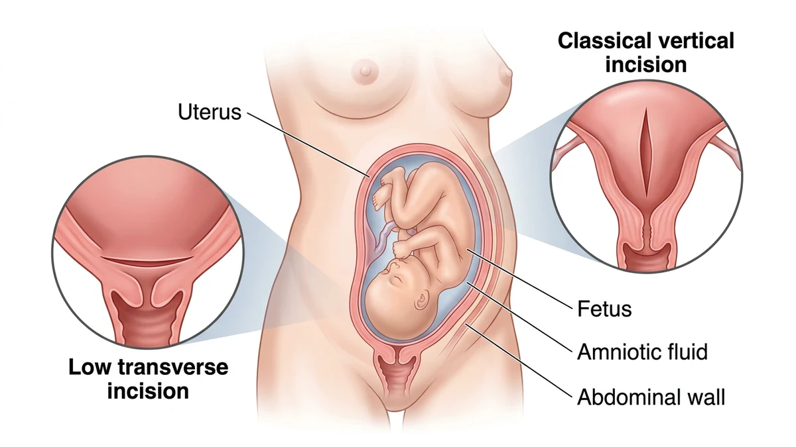
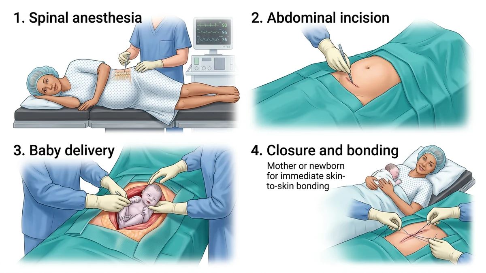

سزارین نوعی زایمان جراحی است که در آن نوزاد از طریق برشی کنترلشده در پایین شکم و رحم به دنیا میآید؛ امروزه بیشتر سزارینها با بیحسی نخاعی انجام میشوند تا مادر بیدار بماند و اولین گریهٔ نوزادش را بشنود. این عمل زمانی انتخاب میشود که زایمان طبیعی برای مادر یا نوزاد ایمن نباشد.
برای بسیاری از مادران، نام اتاق عمل همزمان شوق دیدار نوزاد و دلشوره از فضای ناشناخته را بیدار میکند. در تجربهٔ سالها کار در اتاق عمل زنان دیدهام که بخش بزرگی از این اضطراب فقط به خاطر ندانستن جزئیات ساده است. در این راهنما مسیر واقعی سزارین را شفاف باز میکنیم؛ جزئیات اجرایی همیشه بر پایهٔ شرایط بارداری، نظر متخصص زنان و پروتکل مرکز درمانی شما تنظیم میشود.
هدف اصلی این جراحی در همهٔ منابع علمی یکی است: حفظ همزمان سلامت مادر و نوزاد وقتی زایمان طبیعی ایمن نباشد یا با خطر همراه شود. متخصص زنان ممکن است از هفتههای پایانی بارداری یا در جریان دردهای زایمانی این تصمیم را بگیرد. شایعترین دلایل پزشکی عبارتاند از:

امروزه در بیشتر سزارینهای برنامهریزیشده و بسیاری از موارد غیراورژانسی، روش استاندارد بیحسی ناحیهای مثل نخاعی یا اپیدورال است. داروی بیحسی با سوزنی ظریف در فضای کمری تزریق میشود و نیمهٔ پایینی بدن بیحس میشود، اما مادر کاملاً بیدار است، نفس عادی میکشد و صدای نخستین گریهٔ فرزندش را در همان ثانیهٔ تولد میشنود. تفاوت کامل این دو روش در مقالهٔ بیهوشی عمومی و بیحسی نخاعی توضیح داده شده است.
وقتی ثانیهها برای خروج فوری نوزاد حیاتیاند یا بیحسی کمری منع پزشکی دارد، تیم بیهوشی سراغ بیهوشی عمومی میرود. انتخاب نهایی روش پس از بررسی پرونده در مشاورهٔ بیهوشی و امضای رضایتنامه انجام میشود.
| ویژگی | بیحسی نخاعی یا اپیدورال | بیهوشی عمومی |
|---|---|---|
| وضعیت مادر | بیدار و آگاه در طول عمل | خواب عمیق دارویی تا پایان بخیهها |
| شنیدن صدای تولد | بلافاصله در لحظهٔ خروج نوزاد | دیدار با نوزاد پس از بیداری در ریکاوری |
| کاربرد رایج | بیشتر سزارینهای انتخابی و پایدار | موارد بسیار فوری یا منع بیحسی کمری |
وقتی با مراحل واقعی آشنا باشید، هیچ صدایی غافلگیرتان نمیکند. روال معمول از شش گام پیاپی تشکیل میشود:

بسیاری از مادران با حس تکان خوردن شکم فکر میکنند بیحسی کم شده، در حالی که رشتههای عصبی انتقالدهندهٔ درد تیز کاملاً مسدود شدهاند ولی رشتههای عمقی لمس و فشار مکانیکی هنوز پیام حرکت را مخابره میکنند. لحظهٔ خروج سر نوزاد، کمکجراح دستش را به نرمی بالای شکم میگذارد و نوزاد را به پایین هدایت میکند؛ این حس شبیه تکان ملایم روی پتوی ضخیم است و چند ثانیه بعد صدای گریهٔ نوزاد بلند میشود.
نوزاد زیر گرمکنندهٔ مخصوص توسط پرستار یا متخصص اطفال خشک و معاینه میشود و دستبند شناسایی همنام با مادر به مچش بسته میشود. اگر حال هر دو پایدار باشد، طبق پروتکل مرکز امکان تماس پوستبهپوست اولیه فراهم میگردد. سپس مادر به اتاق ریکاوری منتقل میشود تا فشار خون، سفتی رحم، خونریزی و بازگشت حس پاها پایش شود. لرز خفیف یا تهوع گذرا جزو عوارض شایع و قابل مدیریت بیحسی است.
سزارین برنامهریزیشده با آرامش و هماهنگی از پیش تعیینشده پیش میرود، اما در نوع اورژانسی تیم با سرعت تمرینشده وارد عمل میشود. دیدن حرکت سریع پرسنل نباید بترساند؛ این سرعت برای تولد ایمن نوزاد در کوتاهترین زمان است. مراقبتهای کامل پس از عمل در مقالهٔ مراقبتهای بعد از سزارین و آمادگیهای پیش از عمل در آمادگی قبل از سزارین آمده است.
سزارین جراحی رایج و استانداردی است، اما مانند هر عمل دیگری ممکن است عفونت زخم، خونریزی، لختهشدن خون در پاها یا چسبندگی داخل شکم رخ دهد. معاینهٔ دقیق، چکلیست ایمنی و پایش بیهوشی این خطرها را تا حد امکان پایین میآورد.
⚠️ پس از ترخیص، در صورت خونریزی بسیار شدید واژینال، تب بالا، درد فزایندهٔ شکم، سردرد شدید همراه تاری دید، تنگی نفس یا تورم یکطرفهٔ ساق پا منتظر نمانید و فوراً با پزشک معالج تماس بگیرید یا با ۱۱۵ اورژانس را خبر کنید. سایر هشدارها در راهنمای جامع علائم خطر بعد از عمل فهرست شدهاند.
خیر. تیم بیهوشی پیش از شروع عمل، بیحسی کامل ناحیه را به دقت آزمایش میکند؛ مادر در طول عمل دردی ندارد و فقط حس لمس، تکان یا فشار ملایم را متوجه میشود که با درد جراحی تفاوت دارد.
پس از کامل شدن بیحسی و ضدعفونی شکم، تولد نوزاد معمولاً در دقایق نخست عمل انجام میشود و بخش بزرگتر زمان جراحی صرف ترمیم دقیق لایههای رحم و شکم میشود. مدت کامل عمل به شرایط هر مادر بستگی دارد.
جراح یا کمکجراح با هدایت ملایم بالای رحم به خروج آرام سر و شانهٔ نوزاد کمک میکند. چون رشتههای عصبی درد مسدودند ولی رشتههای فشار و لمس کار میکنند، این حرکت به صورت فشار کوتاه و طبیعی حس میشود و نشانهٔ مشکل نیست.
اگر مادر با بیحسی نخاعی هوشیار باشد و وضعیت تنفسی نوزاد پایدار ارزیابی شود، طبق پروتکل مرکز درمانی نوزاد به مادر نشان داده میشود و امکان تماس پوستی اولیه فراهم میگردد.
در سزارین برنامهریزیشده، تاریخ بستری، آزمایشها و ویزیت بیهوشی از قبل هماهنگ است. در نوع اورژانسی، بهدلیل تغییر ناگهانی وضعیت مادر یا جنین، تیم با سرعت بالا اما کاملاً تمرینشده وارد عمل میشود تا نوزاد در کوتاهترین زمان ایمن متولد شود.
مانند هر جراحی دیگری، عفونت زخم، خونریزی، لختهشدن خون یا چسبندگی ممکن است رخ دهد، اما معاینهٔ دقیق، چکلیست ایمنی و پایش تیم بیهوشی این خطرها را تا حد امکان کم میکند. تصمیم به سزارین همیشه با هدف حفظ سلامت همزمان مادر و نوزاد گرفته میشود.
دستور پزشک و پروتکل مرکز درمانی شما بر هر متن عمومی مقدم است.
این مقاله صرفاً جنبهی آموزش و اطلاعرسانی دارد و جایگزین تشخیص، مشاوره یا درمان پزشکی نیست.